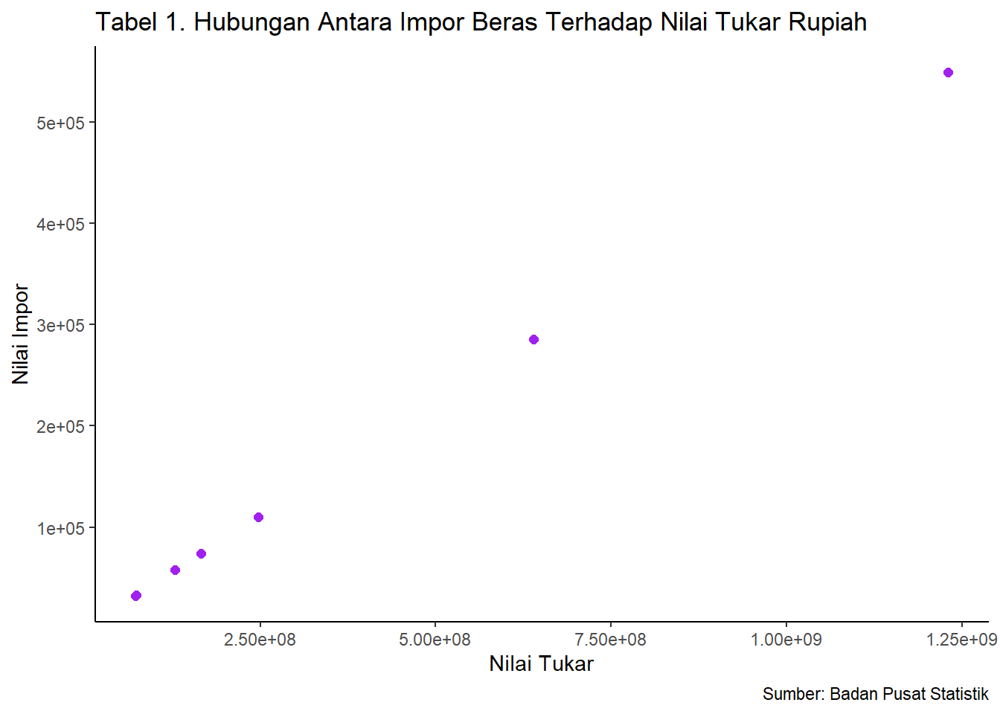

ANALISIS PENGARUH IMPOR BERAS DARI NEGARA TIONGKOK TERHADAP NILAI TUKAR RUPIAH PADA TAHUN 2015-2021
Metode Penelitian Politeknik APP Jakarta
Author
Grace Yoan Grassela Sinaga
Published
January 20, 2023
1 Pendahuluan
1.1 Latar belakang
Produksi dalam negeri tidak dapat memenuhi semua kebutuhan dan keinginan penduduk dalam negeri itu sendiri, maka dari itu terciptanya perdagangan internasional. Perdagangan internasional adalah perdagangan antara atau lintas negara yang meliputi kegiatan ekspor dan impor (Tambunan, 2001). Adapun kegiatan di dalam perdagangan internasional, yaitu ekspor dan impor. Kegiatan ekspor dan impor memiliki peran yang penting dalam suatu negara dan sangat erat kaitannya dengan pertumbuhan ekonomi pada suatu negara. Ekspor berarti kegiatan mengeluarkan barang dari suatu negara keluar wilayah pabean. Sedangkan impor adalah kegiatan memasukkan barang dari suatu negara diluar negeri ke dalam wilayah pabean. Indonesia melakukan kegiatan ekspor impor untuk memenuhi kebutuhan dalam negeri, yang belum terpenuhi sehingga terciptanya stabilitas pasokan dalam negeri.
Beras adalah salah satu bahan pokok makanan paling penting bagi manusia. Pernyataan ini terutama berlaku di benua Asia, beras menjadi makanan pokok untuk mayoritas penduduk. Di Indonesia beras merupakan bahan makanan yang mempunyai tingkat konsumsi yang paling tinggi di Dunia. Meski demikian, Indonesia masih harus mengimpor beras hamper setiap tahunnya.
Sebagian besar dari penduduk Indonesia masih membutuhkan beras sebagai makanan pokoknya. Jumlah penduduk di Indonesia bertambah setiap tahunnya, sehingga permintaan dan penawaran beras mengalami peningkatan dan menyebabkan konsumsi beras seringkali melebihi produksinya.
Indonesia merupakan urutan ketiga sebagai produsen beras terbesar di dunia setelah China dan India, dimana Indonesia menghasilkan produksi beras sebesar 70.600.000 Ton per tahun. Produksi beras dalam negeri diharapkan dapat memenuhi semua kebutuhan masyarakat Indonesia. Walaupun surplus beras di dalam negeri, namun Indonesia masih tetap melakukan impor beras dari luar negeri, karena kebutuhan pangan di Indonesia belum terpenuhi. Kebijakan impor beras di Indonesia dilakukan oleh Perusahaan Umum Badan Urusan Logistik (Perum BULOG).
Selain dengan kegiatan ekspor impor, pertumbuhan ekonomi pun dapat dipengaruhi oleh nilai impornya serta nilai kurs atau nilai tukar rupiah. Uang ditetapkan sebagai alat pembayaran di dalam perdagangan internasional, adanya perbedaan nilai mata uang antar negara yang melakukan kegiatan perdangan internasional mengakibatkan timbulnya kurs atau perbedaan nilai tukar uang.
Alat pembayaran yang digunakan Indonesia saat melakukan transaksi dalam perdagangan internasional, adalah kurs mata uang rupiah terhadap dollar Amerika Serikat. Hal itu dikarenakan kurs dollar Amerika Serikat merupakan mata uang standar internasional yang bernilai relatif stabil.
Alasan penulis tertarik melakukan penelitian ini adalah untuk mengetahui pengaruh nilai tukar rupiah terhadap kegiatan impor beras dari negara Tiongkok. Berdasarkan latar belakang yang telah dijelaskan, maka penelitian ini berjudul “ANALISIS PENGARUH IMPOR BERAS DARI NEGARA TIONGKOK TERHADAP NILAI TUKAR RUPIAH PADA TAHUN 2015-2021”.
1.2 Batasan Permasalahan/Ruang lingkup
Penulisan ini memiliki pembatasan yang mencakup tentang bagaimana pengaruh impor beras dari negara Tiongkok terhadap nilai tukar rupiah. Ruang lingkup dalam penulisan ini hanya menggunakan data dalam kurun waktu selama tujuh tahun terakhir (2015-2021). Pengambilan data yang diperoleh dalam penulisan ini, diperoleh dari website Badan Pusat Statistik (www.bps.go.id).
1.3 Rumusan masalah
Berdasarkan latar belakang yang sudah dijelaskan, maka adapun rumusan permasalahan dalam penelitian ini adalah, bagaimana pengaruh impor beras dari negara Tiongkok terhadap nilai tukar rupiah pada tahun 2015 hingga 2021?
1.4 Tujuan dan Manfaat Penelitian
Tujuan dari penelitian ini adalah untuk menganalisis pengaruh impor beras dari negara Tiongkok, agar dapat mengetahui seberapa besar pengaruh impor beras terutama terhadap nilai tukar rupiah pada tahun 2015 hingga 2021.
Adapun manfaat penelitian ini, adalah:
Secara teoritis, penelitian ini diharapkan mampu memberikan manfaat dan dampak yang positif, pada bidang ekonomi dan bidang keilmuan. Khususnya, dalam mengenal seberapa pengaruh impor beras dari negara Tiongkok terhadap nilai tukar rupiah.
Secara praktis, penelitian ini diharapkan mampu bermanfaat bagi pembaca umum dan juga peneliti, guna mengetahui pengaruh impor komoditi beras dari negara Tiongkok terhadap nilai tukar rupiah pada tahun 2015-2021.
2 Studi Pustaka
1. Perdagangan Internasional
Menurut Christianto (2013) Pengertian perdagangan internasional secara sederhana menurut kamus ekonomi yaitu perdagangan yang terjadi antara dua negara atau lebih. Perdagangan luar negeri merupakan aspek penting bagi perekonomian suatu negara.
2. Impor
Impor bisa diartikan sebagai kegiatan memasukkan barang dari suatu negara (luar negeri) ke dalam wilayah pabean negara lain. Hal ini berarti melibatkan dua Negara. Dalam hal ini bisa diwakili oleh kepentingan dua perusahaan antar dua negara tersebut yang berbeda dan pastinya juga peraturan serta perundang-undangan yang berbeda pula. Negara yang satu bertindak sebagai eksportir (supplier) dan yang lainnya bertindak sebagai negara penerima/importir (Andi Susilo,2013).
3. Ekspor
Adapun pengertian eksportir adalah orang atau pengusaha yang mendapatkan izin untuk menjual atau mengirim hasil produksinya kepada peembeli di luar negeri. (Yahya, Marzuqi, 2016:29).
4. Nilai Tukar Mata Uang
Menurut Mankiw (2007), nilai tukar mata uang antara dua negara adalah harga dari mata uang yang digunakan oleh penduduk negara-negara tersebut untuk saling melakukan perdagangan antara satu sama lain.
3 Metode Penelitian
3.1 Data
Metode analisis yang digunakan dalam penelitian ini, menggunakan metode dengan mengambil data sekunder. Data pada analisis dalam penelitian ini, dicatat secara sistematis yang berbentuk data runtut waktu (time series data), dari 2015 hingga 2021.
Pengambilan data yang diperoleh dalam penulisan ini, diperoleh dari website Badan Pusat Statistik (www.bps.go.id). Data dalam penulisan ini meliputi: 1) Nilai tukar; 2) Nilai impor.
library(tidyverse)
Warning: package 'tidyverse' was built under R version 4.2.2
Warning: package 'readxl' was built under R version 4.2.2
dat<-read_excel('latihan.xlsx')library(ggplot2)ggplot(data=dat, aes(x=X, y=Y))+geom_point(color='purple', size=2)+labs(title="Tabel 1. Hubungan Antara Impor Beras Terhadap Nilai Tukar Rupiah",x="Nilai Tukar",y="Nilai Impor",caption ="Sumber: Badan Pusat Statistik") +theme_classic()

Figure 1: Hubungan Antara Impor Beras Terhadap Nilai Tukar Rupiah
3.2 Metode Analisis
Teknik metode analisis yang digunakan dalam penelitian ini, adalah teknik kuantitatif serta penjabaran deskriptif. Teknik analisis kuantitatif merupakan analisis yang dilakukan dengan perhitungan angka-angka dari faktor yang mempengaruhi indeks nilai tukar rupiah terhadap nilai impor, yaitu nilai impor beras dari negara Tiongkok pada tahun 2015-2021. Teknik analisis kuantitatif yang dilakukan dalam penelitian ini dengan melakukan regresi menggunakan metode yang dipilih adalah regresi univariat atau Ordinary Least Square (OLS) dengan 2 variabel independen.
Secara spesifik, model regresi yang digunakan, disajikan sebagai berikut:
\[
y_{t}=\beta_0 + \beta_1 x_t+\mu_t
\]
Keterangan:
γ = Nilai impor
β0 = Konstanta
β1 = Konstanta nilai tukar
X = Nilai tukar
μ = error term
4 Pembahasan
4.1 Pembahasan Masalah
Indonesia merupakan urutan ketiga sebagai produsen beras terbesar di dunia setelah China dan India, dimana Indonesia menghasilkan produksi beras sebesar 70.600.000 Ton per tahun. Walaupun surplus beras di dalam negeri, namun Indonesia masih tetap melakukan impor beras setiap tahunnya dari luar negeri, karena kebutuhan pangan di Indonesia belum terpenuhi. Sampai saat ini, Indonesia masuk ke dalam kategori negara importir beras.
Tahun
Nilai Tukar
Nilai Impor
2015
247.078.853
110.296
2016
639.392.921
285.425
2017
1.229.899.193
549.027
2018
165.745.967
73.989
2019
73.093.637
32.629
2020
72.609.767
32.413
2021
128.841.845
57.515
Berdasarkan uraian tabel diatas mengenai data nilai tukar dan nilai impor selama kurun waktu tujuh tahun terakhir, yang memiliki nilai tukar dan impor tertinggi yaitu pada tahun 2017. Sedangkan yang memiliki nilai tukar dan nilai impor terendah yaitu pada tahun 2020.
Faktor yang mempengaruhi turunnya nilai tukar rupiah pada tahun 2020, disebabkan oleh merebaknya pandemi Covid-19, sehingga berpengaruh besar terhadap perjalanan nilai tukar rupiah sepanjang semester I tahun 2020 yang cenderung bergerak fluktuatif dan mengalami depresiasi. Sedangkan turunnya nilai impor beras pada tahun 2020 tersebut, karena capaian impor beras pada tahun 2020 yang memang sedikit menurun dibandingkan setahun sebelumnya.
Bank Indonesia (BI) menyatakan, nilai tukar rupiah cenderung stabil sepanjang tahun 2017. Maka dari itu, nilai rupiah pada tahun 2017 meningkat dari tahun sebelumnya.
Call:
lm(formula = Y ~ X, data = dat)
Residuals:
1 2 3 4 5 6 7
0.45349 -0.14140 0.02609 -0.40480 0.15828 -0.24208 0.15042
Coefficients:
Estimate Std. Error t value Pr(>|t|)
(Intercept) -1.081e-01 1.618e-01 -6.680e-01 0.534
X 4.464e-04 3.000e-10 1.488e+06 <2e-16 ***
---
Signif. codes: 0 '***' 0.001 '**' 0.01 '*' 0.05 '.' 0.1 ' ' 1
Residual standard error: 0.3151 on 5 degrees of freedom
Multiple R-squared: 1, Adjusted R-squared: 1
F-statistic: 2.214e+12 on 1 and 5 DF, p-value: < 2.2e-16
Dari hasil regresi diatas, dapat disimpulkan dalam tabel berikut:
Variable
Coeficient
Std. Error
T. value
Prob
Intercept
-1.081e-01
1.618e-01
-6.680e-01
0.534
X
4.464e-04
3.000e-10
1.488e+06
<2e-16 ***
R-Squared
1
Adjusted R-Squared
1
F-Statistic
2.214e+12
Prob (F-Statistic)
2.2e-16
Impor beras berpengaruh terhadap nilai tukar. Ditunjukkan dengan dilihat dari probabilitas X (Nilai Impor) yang signifikan. Dimana nilai impor sering menjadi faktor yang dapat mendorong naik dan turunnya kurs mata uang suatu negara. Nilai koefisien impor sebesar 4.464e-04, yang berarti kenaikan perubahan nilai impor berpengaruh terhadap nilai kurs rupiah terhadap yuan. Dengan hasil ini, maka dapat disimpulkan bahwa pendapatan impor berpengaruh positif terhadap nilai tukar rupiah.
5 Kesimpulan
Berdasarkan hasil analisis kuantitatif yang telah dilakukan, dapat disimpulkan bahwa impor beras dari negara Tiongkok berpengaruh signifikan terhadap pertumbuhan ekonomi, terutama pada nilai tukar rupiah, yang mana pengeluaran impor berpengaruh positif terhadap nilai tukar rupiah. Hal tersebut berkaitan dengan teori perdagangan internasional, dimana nilai impor sering menjadi faktor yang dapat mendorong naik dan turunnya kurs mata uang suatu negara. Apabila impor berpengaruh, maka dapat membantu memenuhi kebutuhan dalam negeri yang belum tercukupi. Berarti dapat dikatakan bahwa, impor beras dari negara Tiongkok, cukup membantu kebutuhan beras di Indonesia, dan berpengaruh dalam nilai tukar rupiah.
Pemerintah pun melakukan impor dengan alasan agar harga beras didalam negeri tetap stabil, dan stok dari pemerintah akan didistribusikan agar harga beras yang beredar tetap stabil. Importasi bisa saja dilakukan, tetapi akan lebih baik jika pemerintah memaksimalkan produksi beras dalam negeri agar Indonesia dapat meminimalkan impor beras dari luar negeri, dengan cara memaksimalkan luas panen dan mendukung para petani.
Ismanto, B., Kristini, M. A., & Rina, L. (2019). Pengaruh Kurs dan Impor Terhadap Pertumbuhan Ekonomi Indonesia Periode Tahun 2007-2017. Ecodunamika, 2(1).
PENANGANAN DOKUMEN EKSPOR PADA KAWASAN BERIKAT ELECTRONICS GOODS LED TV DI PT INTECH ANUGRAH INDONESIA KE INDIA - Repository Universitas Maritim AMNI (UNIMAR AMNI) Semarang. (n.d.). Retrieved January 20, 2023, from http://repository.stimart-amni.ac.id/1318/
Analisis Faktor-Faktor Yang Mempengaruhi Impor Kedelai di Indonesia Tahun 1977-2015—UMS ETD-db. (n.d.). Retrieved January 20, 2023, from http://eprints.ums.ac.id/59653/
PELAYANAN JASA IMPOR OFFICE STATIONERY CV. HUTAMA ERA SEJAHTERA OLEH EMKL PT. DHANA PERSADA MANUNGGAL SEMARANG - Repository Universitas Maritim AMNI (UNIMAR AMNI) Semarang. (n.d.). Retrieved January 20, 2023, from http://repository.stimart-amni.ac.id/767/